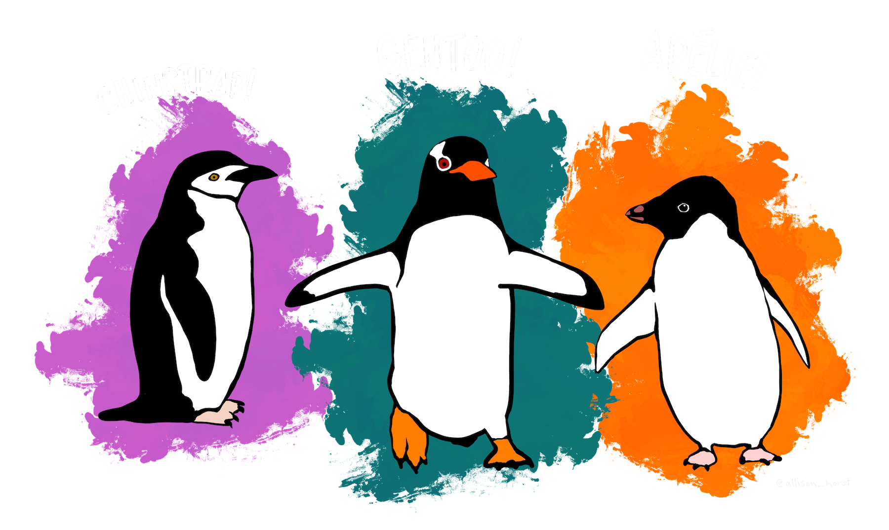

Penguins of the Palmer Archipelago: How do Chinstrap, Adelie, and Gentoo penguins compare physically?
Welcome to an exploration of three adorable species of penguins from the Palmer Archipelago in Antarctica! Based on data collected and made available by Dr. Kristen Gorman and the Palmer Station Long Term Ecological Research (LTER) Program, this website aims to provide an interactive visualisation of differences in size measurements and physical attributes of adult foraging Adélie, Chinstrap, and Gentoo penguins.

The visualisations below explore and compare differences in physical attributes of the three penguin
species, answering the question How do Chinstrap, Adelie, and Gentoo penguins compare? Attributes
available include species, body mass (measured in grams), flipper length (measured in millimetres),
beak length (measured in millimetres), and beak depth (measured in millimetres).
In the original dataset, a penguin’s beak is discussed using its more scientific term culmen.
But, for the purpose of this visualisation, we will use the more general term beak in
graph axis and descriptions. It is however good to know, that the culmen refers to the upper ridge of
a bird's beak.
Information for this introduction has been compiled from the Kaggle and GitHub pages
of the dataset. Please find references to these pages, the original dataset, and its contributors at
the bottom of the page.
Histogrammic Overview
The histogram is designed to provide an overview of the three penguin species. By choosing between body mass, flipper length, beak length, and beak depth, the user can explore either the average distribution of a certain body characteristic’s measurements or choose a specific penguin species to peruse from the dropdown menu. Here, the x-axis spans from the minimum value to the maximum, not from zero. This is done to for better readability. Hover over a bar to get the exact value.
Scatterplot comparison
The scatterplot introduces a secondary perspective on the data, plotting a comparison of two chosen physical attributes. The three species are also separated by colour for a further inter-species exploration of differences between individual penguins. The user can choose what attributes are represented on each axis using the dropdown menus. For the purpose of graph clarity, the chosen axes extend from the minimum to the maximum value within that attribute. Specific data on demand is also available by hovering an individual circle on the graph. Also, hover over the species legend to highlight all corresponding datapoints. Overall, the scatterplot opens an avenue to explore differences and similarities between penguin species and their body characteristics. Which species has the longest flippers but lowest body mass? Explore to find out!
Copyright and licence information
The data used is available by CC-0 license in accordance with the Palmer Station LTER Data Policy and the LTER Data Access Policy for Type I data. CC-0 states that data are placed in the public domain, so that others may freely build upon, enhance, and reuse the works for any purposes without restriction under copyright or database law. More info can be found here.
References
Pandey P (2020) Palmer Archipelago (Antarctica) penguin data. https://www.kaggle.com/datasets/parulpandey/palmer-archipelago-antarctica-penguin-data?resource=download (Accessed 02/04/2022).
Horst A (2020) palmerpenguins. https://github.com/allisonhorst/palmerpenguins/blob/master/README.md (Accessed 02/04/2022).
Gorman KB, Williams TD, Fraser WR (2014) Ecological Sexual Dimorphism and Environmental Variability within a Community of Antarctic Penguins (Genus Pygoscelis). PLoS ONE 9(3): e90081. https://doi.org/10.1371/journal.pone.0090081
Adélie penguins: Palmer Station Antarctica LTER and K. Gorman. 2020. Structural size measurements and isotopic signatures of foraging among adult male and female Adélie penguins (Pygoscelis adeliae) nesting along the Palmer Archipelago near Palmer Station, 2007-2009 ver 5. Environmental Data Initiative. https://doi.org/10.6073/pasta/98b16d7d563f265cb52372c8ca99e60f (Accessed 02/04/2022).
Gentoo penguins: Palmer Station Antarctica LTER and K. Gorman. 2020. Structural size measurements and isotopic signatures of foraging among adult male and female Gentoo penguin (Pygoscelis papua) nesting along the Palmer Archipelago near Palmer Station, 2007-2009 ver 5. Environmental Data Initiative. https://doi.org/10.6073/pasta/7fca67fb28d56ee2ffa3d9370ebda689 (Accessed 02/04/2022).
Chinstrap penguins: Palmer Station Antarctica LTER and K. Gorman. 2020. Structural size measurements and isotopic signatures of foraging among adult male and female Chinstrap penguin (Pygoscelis antarcticus) nesting along the Palmer Archipelago near Palmer Station, 2007-2009 ver 6. Environmental Data Initiative. https://doi.org/10.6073/pasta/c14dfcfada8ea13a17536e73eb6fbe9e (Accessed 02/04/2022).